anastasia
 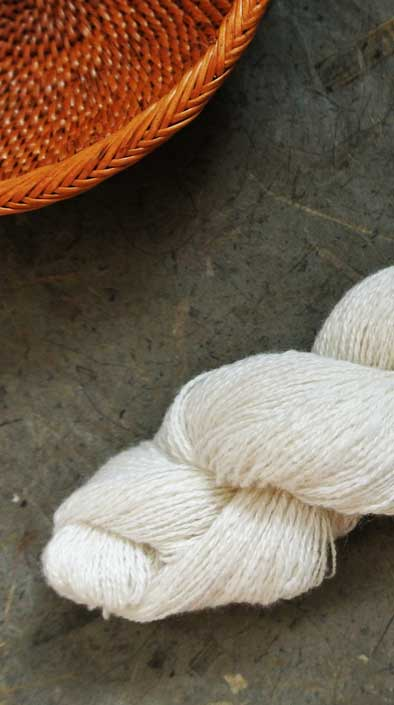
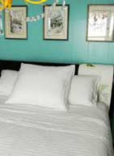
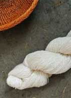
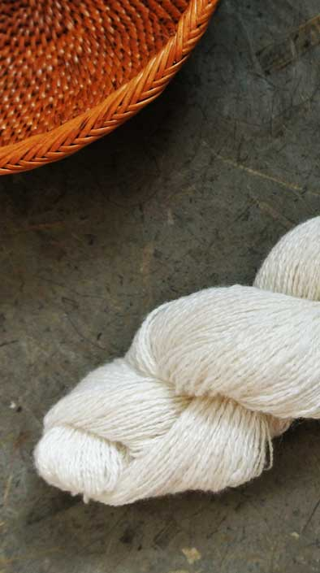
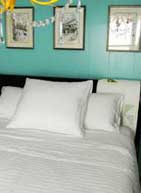
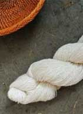
Living in the Low Country of Georgia with humid days and humid nights most months of the year, I had been searching for a set of high quality linen sheets for some while. When I came across Rough Linen, I knew I had found something special.
For years I've enjoyed textiles; the fine weave of old linens, the exuberant embroidery of kimono, the exquisitely sewn hems and seams, the natural state of wild silk and baste fibers, the glorious display of natural dyes.
As an artist-creator I've delved into the process of textiles; spinning, weaving, dying, embroidering and sewing. While researching these skills I would come across mentions of flax and homespun linens and the role they played in the lives of women over the centuries. It's amazing feeling the connection between one's self and one's ancestors by using the same skills to create.
Now that I finally have a set of white smooth linen sheets, I can go to sleep surrounded by the same sensations of linen against my skin as generations of women who have gone before me; it's a new way of experiencing the simple pleasures of the past. Thank you, Anastasia
 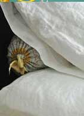
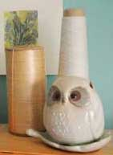
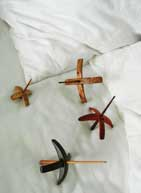
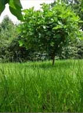
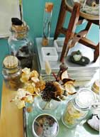
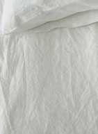
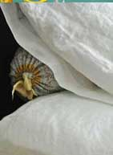
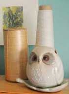
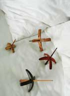
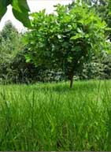
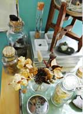
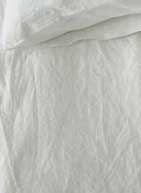